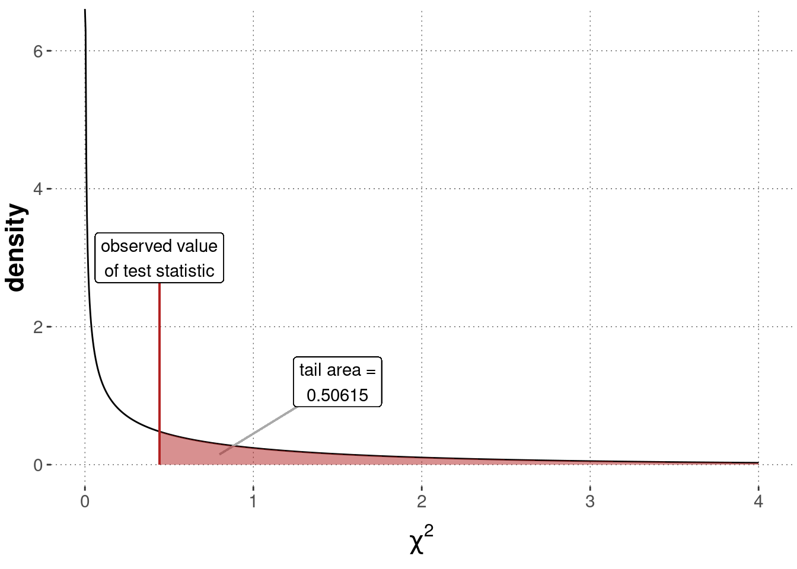

There are many tests that use the \(\chi^2\)-distribution as an (approximate) sampling distribution. But given relevance and historical prominence, the name “\(\chi^2\)-test” is usually interpreted to refer to one of several flavor’s of what we could specifically call “Pearson’s \(\chi^2\)-test”.
We will look at two flavors here. Pearson’s \(\chi^2\)-test for goodness of fit tests whether an observed vector of counts is well explained by a given vector of predicted proportion. Pearson’s \(\chi^2\)-test for independence tests whether a (two-dimensional) table of counts could plausibly have been generated by a process of independently selecting the column and the row category. We will explain how both of these tests work based on an application of the BLJM data, which we load as usual:
## # A tibble: 4 x 3
## JM LB n
## <chr> <chr> <int>
## 1 Jazz Biology 38
## 2 Jazz Logic 26
## 3 Metal Biology 20
## 4 Metal Logic 18
Remember that the lecturer’s bold conjecture was that a preference for Logic over Biology goes together with a preference for Metal over Jazz. The visualization suggests that there might be such a trend, but the (statistical) jury is still out as to whether this conjecture has empirical support.
10.3.1.1 Pearson’s \(\chi^2\)-test for goodness of fit
“Goodness of fit” is a term used in model checking (a.k.a. model criticism, model validation, …). In such a context, tests for goodness-of-fit investigate whether a model’s predictions are compatible with the observed data. Pearson’s \(\chi^2\)-test for goodness of fit does exactly this for categorical data.
Categorical data is data where each data observation falls into one of several unordered categories. If we have \(k\) such categories, a prediction vector\(\vec{p} = \langle p_1, \dots, p_k \rangle\) is a probability vector of length \(k\) such that \(p_i\) gives the probability with which a single data observation falls into the \(i\)-th category. The likelihood of a single data observation is given by the Categorical distribution, and the likelihood of \(N\) data observations is given by the Multinomial distribution. These are generalizations of the Bernoulli and Binomial distributions, which expand the case of two unordered categories to more than two unordered categories.
The BLJM data supplies us with categorical data. Here is the vector of counts of how many participants selected a given music+subject pair:
Figure 10.7 shows a crude plot of these counts, together with a baseline prediction of equal proportion in each category.
Figure 10.7: Observed counts of choice pairs of music+subject preference in the BLJM data.
Pearson’s \(\chi^2\)-test for goodness of fit allows us to test whether this data could plausibly have been generated by (a model whose predictions are given by) a prediction vector \(\vec{p} = \langle p_1, \dots, p_4 \rangle\), where \(p_1\) would be the predicted probability of a choice pair “Biology-Jazz” occurring for a single participant, and so on. Frequently, this test is used to check whether an equal baseline distribution could have generated the data. We do that here, too. We form the null hypothesis that \(\vec{p} = \vec{p}_0\) with \(p_{0i} = \frac{1}{4}\) for all categories \(i\).
Figure 10.8 shows a graphical representation of the model implicitly assumed in the background for a Pearson’s \(\chi^2\)-test for goodness of fit. The model assumes that the observed vector of counts (like our counts_BLJM_choice_pairs_vector from above) follows a Multinomial distribution.68 Each vector of (hypothetical) data is associated with a test statistic, called \(\chi^2\), which sums over the standardized squared deviation of the observed counts from the predicted baseline in each cell. It can be shown that, if the number of observations \(N\) is large enough, the sampling distribution of the \(\chi^2\) test statistic is approximated well enough by the \(\chi^2\)-distribution with \(k-1\) degrees of freedom (where \(k\) is the number of categories).69 Notice that the approximation by a \(\chi^2\)-distribution hinges on an approximation, which is only met when there are enough samples (just as we needed in the CLT). A rule-of-thumb is that at most 20% of all cells should have expected frequencies below 5 in order for the test to be applicable, i.e., \(np_i < 5\) for all \(i\) in Figure 10.8.
Figure 10.8: Graphical representation of Pearson’s \(\chi^2\)-test for goodness of fit (testing a vector of predicted proportion).
We can compute the \(\chi^2\)-value associated with the observed data \(t(D_{obs})\) as follows:
We can then compare this value to the sampling distribution, which is a \(\chi^2\)-distribution with \(k-1 = 3\) degrees of freedom. We compute the \(p\)-value associated with our data as the tail of the sampling distribution, as also shown in Figure 10.9:70
Figure 10.9: Sampling distribution for a Pearson’s \(\chi^2\)-test of goodness of fit (\(\chi^2\)-distribution with \(k-1 = 3\) degrees of freedom), testing a flat baseline null hypothesis based on the BLJM data.
Of course, these calculations can also be performed by using a built-in R function, namely chisq.test:
##
## Chi-squared test for given probabilities
##
## data: counts_BLJM_choice_pairs_vector
## X-squared = 9.5294, df = 3, p-value = 0.02302
The common interpretation of our calculations would be to say that the test yielded a significant result, at least at the significance level of \(\alpha = 0.5\). In a research paper, we might report these results roughly as follows:
Observed counts deviated significantly from what is expected if each category (here: pair of music+subject choice) was equally likely (\(\chi^2\)-test, with \(\chi^2 \approx 9.53\), \(df = 3\) and \(p \approx 0.023\)).
Notice that this test is an “omnibus test of difference”. We can conclude from a significant test result that the whole vector of observations is unlikely to have been generated by chance. Still, we cannot conclude from this result (without doing anything else) why, where or how the observations deviated from the assumed prediction vector. Looking at the plot of the data in Figure 10.7 above, it seems intuitive to think that Metal is disproportionally disfavored and that the combination of Biology and Jazz looks particularly outliery when compared to the baseline expectation.
10.3.1.2 Pearson’s \(\chi^2\)-test of independence
The previous test of goodness of fit does not allow us to address the lecturer’s conjecture that a preference of Metal over Jazz goes with a preference of Logic over Biology. A slightly different kind of \(\chi^2\)-test is better suited for this. In Pearson’s \(\chi^2\)-test of independence, we look at a two-dimensional table of correlated data observations, like this one:
Pearson’s \(\chi^2\)-test of independence addresses the question of whether two-dimensional tabular count data like the above could plausibly have been generated by a prediction vector \(\vec{p}\), which results from the assumption that the realizations of row- and column-choices are stochastically independent. If row- and column-choices are independent, the probability of seeing an outcome result in cell \(ij\) is the probability of realizing row \(i\) times the probability of realizing column \(j\). So, under an independence assumption, we expect a matrix and a resulting vector of choice proportions like this:
Figure 10.10 shows a graphical representation of the \(\chi^2\)-test of independence. The main difference to the previous test of goodness of fit is that we do no longer just fix any-old prediction vector \(\vec{p}\), but consider \(\vec{p}\) the deterministic results of independence and the best estimates (based on the data at hand) of the row- and column probabilities.
Figure 10.10: Graphical representation of Pearson’s \(\chi^2\)-test for independence.
We can compute the observed \(\chi^2\)-test statistic and the \(p\)-value as follows:
Figure 10.11 shows the sampling distribution, the value of the test statistic for the observed data and the \(p\)-value.

Figure 10.11: Sampling distribution for a Pearson’s \(\chi^2\) test of independence (\(\chi^2\)-distribution with \(1\) degree of freedom), testing a flat baseline null hypothesis based on the BLJM data.
We can also use the built-in function chisq.test in R to obtain this result more efficiently:
With a \(p\)-value of about 0.5061, we should conclude that there is no indication of strong evidence against the assumption of independence. Consequently, there is no evidence in favor of the lecturer’s conjecture of dependence of musical and academic preferences. In a research paper, we might report this result as follows:
A \(\chi^2\)-test of independence did not yield a significant test result (\(\chi^2\)-test, with \(\chi^2 \approx 0.44\), \(df = 1\) and \(p \approx 0.5\)). Therefore, we cannot claim to have found any evidence for the research hypothesis of dependence.
Exercise E.2: \(\chi^2\)-test of independence
Let us assume that there are two unordered categorical variables \(A\) and \(B\). Categorical variable \(A\) has two levels \(a_1\) and \(a_2\). Categorical variable \(B\) has three levels \(b_1\), \(b_2\) and \(b_3\). Let us further assume that the (marginal) probabilities of a choice from categories \(A\) or \(B\) is as follows:
If observations of pairs of instances from categories \(A\) and \(B\) are stochastically independent, what would the expected joint probability of each pair of potential observations be?
Imagine you observe the following table of counts for each pair of instances of categories \(A\) and \(B\):
\(b_1\)
\(b_2\)
\(b_3\)
\(a_1\)
1
26
3
\(a_2\)
19
4
47
Which of the \(p\)-values given below would you expect to see when feeding this table into a
Pearson \(\chi^2\)-test of independence? (only one correct answer)
\(p \approx 1\)
\(p \approx 0.5\)
\(p \approx 0\)
I expect no result because the test is not suitable for this kind of data.
Explain the answer you gave in the previous part in at most three concise sentences.
\(b_1\)
\(b_2\)
\(b_3\)
\(a_1\)
.3 \(\times\) .2 = .06
.3 \(\times\) .3 = .09
.3 \(\times\) .5 = .15
\(a_2\)
.7 \(\times\) .2 = .14
.7 \(\times\) .3 = .21
.7 \(\times\) .5 = .35
The correct answer is \(p \approx 0\).
As the marginal proportions of observed counts for the table in b. equal the marginal probabilities given above, the joint probability table in a. actually gives the predicted probabilities under the assumption of independence. Comparing prediction against observed proportion (obtained by dividing the table in b. by the total count of 100), we see severe divergences, especially in the middle column.
10.3.2z-test
The Central Limit Theorem tells us that, given enough data, we can treat means of repeated samples from any arbitrary probability distribution as approximately normally distributed. Notice in addition that if \(X\) and \(Y\) are random variables following a normal distribution, then so is \(Z = X - Y\) (see also the chapter on the normal distribution). It now becomes clear how research questions about means and differences between means (e.g., in the Mental Chronometry experiment) can be addressed, at least approximately: We conduct tests that hinge on a sampling distribution which is a normal distribution (usually a standard normal distribution).
The \(z\)-test is perhaps the simplest of a family of tests that rely on normality of the sampling distribution. Unfortunately, what makes it so simple is also what makes it inapplicable in a wide range of cases. The \(z\)-test assumes that a quantity that is normally distributed has an unknown mean (to be inferred by testing), but it also assumes that the variance is known. Since we do not know the variance in most cases of practical relevance, the \(z\)-test needs to be replaced by a more adequate test, usually a test from the \(t\)-test family, to be discussed below.
We start with the \(z\)-test nonetheless because of the added benefit to our understanding. Figure 10.12 shows the model that implicitly underlies a \(z\)-test. It checks whether the data \(\vec{x}\), which are assumed to be normally distributed with known \(\sigma\), could have been generated by a hypothesized mean \(\mu = \mu_0\). The sampling distribution of the derived test statistic \(z\) is a standard normal distribution.
Figure 10.12: Graphical representation of a \(z\)-test.
We know that IQ test results are normally distributed around a mean of 100 with a standard deviation of 15. This holds when the sample is representative of the whole population. But suppose we have reason to believe that the sample is from CogSci students. The standard deviation in a sample from CogSci students might still plausibly be fixed to 15, but we’d like to test the assumption that this sample was generated by a mean \(\mu = 100\), our null hypothesis.
For illustration, suppose we observed the following data set of IQ test results:
We focus on a one-sided \(p\)-value because our “research” hypothesis is that CogSci students have, on average, a higher IQ. Since we observed a mean of 105.3 in the data, which is higher than the critical value of 100, we test the null hypothesis \(\mu = 100\) against an alternative hypothesis that assumes that the data was generated by a mean bigger than 100 (which is exactly our research hypothesis).
As before, we can then compute the \(p\)-value by checking the area under the sampling distribution, here a standard normal, in the appropriate way. Figure 10.13 shows this result graphically.
Figure 10.13: Sampling distribution for a \(z\)-test, testing the null hypothesis based on the assumption that the IQ-data was generated by \(\mu = 100\) (with assumed/known \(\sigma\)).
We can also use a ready-made function for the \(z\)-test. However, as the \(z\)-test is so uncommon, it is not built into core R. We need to rely on the BSDA package to find the function z.test.
##
## One-sample z-Test
##
## data: IQ_data
## z = 1.5802, p-value = 0.05704
## alternative hypothesis: true mean is greater than 100
## 95 percent confidence interval:
## 99.78299 NA
## sample estimates:
## mean of x
## 105.3
The conclusion to be drawn from this test could be formulated in a research report as follows:
We tested the null hypothesis of a mean equal to 100, assuming a known standard deviation of 15, in a one-sided \(z\)-test against the alternative hypothesis that the data was generated by a mean greater than 100 (our research hypothesis). The test was not significant (\(N = 20\), \(z \approx 1.5802\), \(p \approx 0.05704\)), giving us no indication of strong evidence against the assumption that the mean is at most 100.
10.3.3t-tests
In most practical applications where a \(z\)-test might be useful, the standard deviation is not known. If unknown, it should also not lightly be fixed by clever guess-work. This is where the family of \(t\)-tests comes in. We will look at two examples of these: the one-sample \(t\)-test, which compares one set of samples to a fixed mean, and the two-sample \(t\)-test, which compares the means of two sets of samples.
10.3.3.1 One-sample \(t\)-test
The simplest example of this family, namely a \(t\)-test for one metric vector \(\vec{x}\) of normally distributed observations, tests the null hypothesis that \(\vec{x}\) was generated by some \(\mu = \mu_0\) (just like the \(z\)-test). However, unlike the \(z\)-test, a one-sample \(t\)-test does not assume that the standard deviation is known. It rather uses the observed data to obtain an estimate for this parameter. More concretely, a one-sample \(t\)-test for \(\vec{x}\) estimates the standard deviation in the usual way (see Chapter 5):
Figure 10.14 shows a graphical representation of a one-sample \(t\)-test model. The light shading of the node for the standard deviation indicates that this parameter is estimated from the observed data. Importantly, the distribution of the test statistic \(t\) is no longer well approximated by a normal distribution when the sample size is low. It is better captured by a Student’s \(t\) distribution.
Figure 10.14: Graphical representation of the model underlying a frequentist one-sample \(t\)-test. Notice that the lightly shaded node for the standard deviation represents that the value for this parameter is estimated from the data.
Let’s revisit our IQ-data set from above to calculate a \(t\)-test. Using a \(t\)-test implies that we are now assuming that the standard deviation is actually unknown. We can calculate the value of the test statistic for the observed data and use this to compute a \(p\)-value, much like in the case of the \(z\)-test before.
Figure 10.15: Sampling distribution for a \(t\)-test, testing the null hypothesis that the IQ-data was generated by \(\mu = 100\) (with unknown \(\sigma\)).
Compare these calculations against the built-in function t.test:
##
## One Sample t-test
##
## data: IQ_data
## t = 2.6446, df = 19, p-value = 0.007992
## alternative hypothesis: true mean is greater than 100
## 95 percent confidence interval:
## 101.8347 Inf
## sample estimates:
## mean of x
## 105.3
These results could be stated in a research report much like so:
We tested the null hypothesis of a mean equal to 100, assuming an unknown standard deviation, using a one-sided, one-sample \(t\)-test against the alternative hypothesis that the data was generated by a mean greater than 100 (our research hypothesis). The significant test result (\(N = 20\), \(t \approx 2.6446\), \(p \approx 0.007992\)) suggests that the data provides strong evidence against the assumption that the mean is not bigger than 100.
Notice that the conclusions we draw from the previous \(z\)-test and this one-sample \(t\)-test are quite different. Why is this so? Well, it is because we (cheekily) chose a data set IQ_data that was actually not generated by a normal distribution with a standard deviation of 15, contrary to what we said about IQ-scores normally having this standard deviation. The assumption about \(\sigma\) fed into the \(z\)-test was (deliberately!) wrong. The result of the \(t\)-test, at least for this example, is better. The data in IQ_data are actually samples from \(\text{Normal}(105,10)\). This demonstrates why the one-sample \(t\)-test is usually preferred over a \(z\)-test: unshakable, true knowledge of \(\sigma\) is very rare.
10.3.3.2 Two-sample \(t\)-test (for unpaired data with equal variance and unequal sample sizes)
The “mother of all experimental designs” compares two groups of measurements. We give a drug to one group of patients, a placebo to another. We take a metric measure (say, blood sugar level) and ask whether there is a difference between these two groups. Section 8.5 introduced the \(T\)-Test Model for a Bayesian approach. Here, we look at a corresponding model for a frequentist approach, a so-called two-sample \(t\)-test. There are different kinds of such two-sample \(t\)-tests. The differences lie, e.g., in whether we assume that both groups have equal variance, in whether the sample sizes are the same in both groups, or in whether observations are paired (e.g., as in a within-subjects design, where we get two measurements from each participant, one from each condition/group). Here, we focus on unpaired data (as from a between-subjects design), assume equal variance but (possibly) unequal sample sizes. The case we look at is the avocado data, where we want to specifically investigate whether the weekly average price of organically grown avocados is higher than that of conventionally grown avocados.71
Remember that the distribution of prices looks as follows:
A graphical representation of the two-sample \(t\)-test (for unpaired data with equal variance and unequal sample sizes), which we will apply to this case, is shown in Figure 10.16. The model assumes that we have two vectors of metric measurements \(\vec{x}_A\) and \(\vec{x}_B\), with length \(n_A\) and \(n_B\), respectively. These are the price measures for conventionally grown and for organically grown avocados. The model assumes that measures in both \(\vec{x}_A\) and \(\vec{x}_B\) are i.i.d. samples from a normal distribution. The mean of one group (group \(B\) in the graph) is assumed to be some unknown \(\mu\). Interestingly, this parameter will cancel out eventually: the approximation of the sampling distribution turns out to be independent of this parameter.72 The mean of the other group (group \(A\) in the graph) is computed as \(\mu + \delta\), so with some additive parameter \(\delta\) indicating the difference between means of these groups. This \(\delta\) is the main parameter of interest for inferences regarding hypotheses concerning differences between groups. Finally, the model assumes that both groups have the same standard deviation, an estimate of which is derived from the data (in a rather convoluted looking formula that is not important for our introductory concerns). As indicated in Figure 10.16, the sampling distribution for this model is an instance of Student’s \(t\)-distribution with mean 0, standard deviation 1 and degrees of freedom \(\nu\) given as \(n_A + n_B - 2\).
Figure 10.16: Graphical representation of the model underlying a frequentist two-population \(t\)-test (for unpaired data with equal variance and unequal sample sizes). Notice that the light shading of the node for the standard deviation indicates that the value for this parameter is estimated from the data.
Figure 10.16 gives us the template to compute the value of the test statistic for the observed data:
We can use the value of the test statistic for the observed data to compute a one-sided \(p\)-value, as before. Notice that we use a one-sided test because we hypothesize that organically grown avocados are more expensive, not just that they have a different price (more expensive or cheaper).
Owing to number imprecision, the calculated \(p\)-value comes up as a flat zero. We have a lot of data, and the task of defending that conventionally grown avocados are not less expensive than organically grown is very tough. This also shows in the corresponding picture in Figure 10.17.
Figure 10.17: Sampling distribution for a two-sample \(t\)-test, testing the null hypothesis of no difference between groups, based on the avocado data.
We can also, of course, calculate this test result with the built-in function t.test:
##
## Two Sample t-test
##
## data: x_A and x_B
## t = 105.59, df = 18247, p-value < 2.2e-16
## alternative hypothesis: true difference in means is not equal to 0
## 95 percent confidence interval:
## 0.4867522 0.5051658
## sample estimates:
## mean of x mean of y
## 1.653999 1.158040
The result could be reported as follows:
We conducted a two-sample \(t\)-test of differences of means (unpaired samples, equal variance, unequal sample sizes) to compare the average weekly price of conventionally grown avocados to that of organically grown avocados. The test result indicates a significant difference for the null hypothesis that conventionally grown avocados are not cheaper (\(N_A = 9123\), \(N_B = 9126\), \(t \approx 105.59\), \(p \approx 0\)).
Exercise E.3: Two-sample \(t\)-test
Your fellow student is skeptical of her flatmate’s claim that pizzas from place \(A\) have a smaller diameter than place \(B\) (both pizzerias have just one pizza size, namely \(\varnothing\ 32\ cm\)). She decides to test that claim with a two-sample \(t\)-test and sets \(H_0: \mu_A = \mu_B\) (\(\delta = 0\)), \(H_a: \mu_A < \mu_B\), \(\alpha = 0.05\). She then asks your class to always measure the pizza’s diameter if ordered from one of the two places. At the end of the semester, she has the following table:
Pizzeria \(A\)
Pizzeria \(B\)
mean
30.9
31.8
standard deviation
2.3
2
sample size
38
44
How many degrees of freedom \(\nu\) are there?
Given the table above, calculate the test statistic \(t\).
Look at this so-called t table and determine the critical value to be exceeded in order to get a statistically significant result. NB: We are looking for the critical value that is on the left side of the distribution. So, in order to have a statistically significant result, the test statistic from b. has to be smaller than the negated critical value in the table.
Compare the test statistic from b. with the critical value from c. and interpret the result.
\(\nu = n_A+n_B-2 = 38+44-2 = 80\) degrees of freedom.
The calculated test statistic from b. is smaller than the critical value. We therefore know that the \(p\)-value is statistically significant. The fellow student should reject the null hypothesis of equal pizza diameters.
10.3.4 ANOVA
We have \(k\) groups of metric observations. For group \(1 \le j \le k\), there are \(n_j\) observations. Let \(x_{ij}\) be the observation \(1 \le i \le n_j\) for group \(1 \le j \le k\). Let \(\bar{x}_j = \frac{1}{n} \sum_{i = 1}^{n_j} x_{ij}\) be the mean of group \(j\) and let \(\bar{\bar{x}} = \frac{1}{k} \sum_{j=1}^k \frac{1}{n_j} \sum_{i=1}^{n_j} x_{ij}\) be the grand mean of all data points. We would like to show that the total sum of squares can be decomposed into two summands: the within-group sum of squares and the between-group sum of squares:
To show this, we first establish a lemma, which will also be useful later:
Lemma 10.1 (Sum of squares cancellation) Let \(\vec{x}\) be a vector of \(n\) real-valued numbers, and let \(\bar{x} = \frac{1}{n} \sum_{i=i}^n x_i\) be its mean. The sum of squares around the mean is zero:
\[
\sum_{i=1}^n (x_i - \bar{x}) = 0
\]
Proposition 10.1 (Sum of squares decomposition (ANOVA)) If \(x_{ij}\) is observation \(1 \le i \le n_j\) for group \(1 \le j \le k\), \(\bar{x}_j = \frac{1}{n} \sum_{i = 1}^{n_j} x_{ij}\) the mean of group \(j\) and \(\bar{\bar{x}} = \frac{1}{k} \sum_{j=1}^k \frac{1}{n_j} \sum_{i=1}^{n_j} x_{ij}\) be the grand mean of all data points, then:
\[
\underbrace{
\sum_{j=1}^k \sum_{i=1}^{n_j} (x_{ij} - \bar{\bar{x}})^2
}_{\text{Total SS}} =
\underbrace{
\sum_{j=1}^k \sum_{i=1}^{n_j} (x_{ij} - \bar{x}_j)^2
}_{\text{Within-Group SS}} +
\underbrace{
\sum_{j=1}^k n_j (\bar{x}_j - \bar{\bar{x}})^2
}_{\text{Between-Group SS}}
\]
## Df Sum Sq Mean Sq F value Pr(>F)
## condition 2 640.8 320.4 4.485 0.0172 *
## Residuals 42 3000.3 71.4
## ---
## Signif. codes: 0 '***' 0.001 '**' 0.01 '*' 0.05 '.' 0.1 ' ' 1
Based on a one-way ANOVA, we find evidence against the assumption of equal means across all groups (\(F(2, 42) \approx 4.485\), \(p \approx 0.0172\)).
Notice that for economy or presentation, we now (again) gloss over the “raw” data of individual choices and present the summarized count data instead. In the previous case of the Binomial Test, it made good pedagogical sense to tease apart the “raw” observations from the summarized counts because this helped to show what the test statistic is for a case, where the choice of it was very, very obvious; so much so, that we would normally not even bother to make it explicit. Now that we understood what a test statistic is in principle, we can gloss over some steps of data summarizing.↩
A proof of this fact is non-trivial, but an intuition why this might be so is available if we think of each cell independently first. In each cell, with more and more samples, the distribution of counts will approximate a normal distribution by the CLT. The \(\chi^2\)-distribution rests (by construction) on a sum of squared samples from a standard normal distribution.↩
Notice that this is a one-sided test due to the nature of the test statistic, which measures squared deviation from the baseline and not deviation in any particular direction (because it is hard to say what a “direction” would be in this case anyway).↩
Notice that the original avocado data set contains information also about the place of measurement, which would in principle allow us to treat the price measurements as paired samples (one pair for each week and place). For simplicity, but with a note of care that this makes us lose possibly relevant structural information, we here treat the avocado data as if it contained unpaired samples.↩
This is intuitively so because the test statistic is concerned only with the difference between sample means.↩